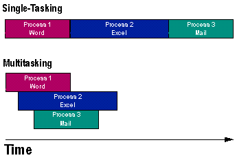
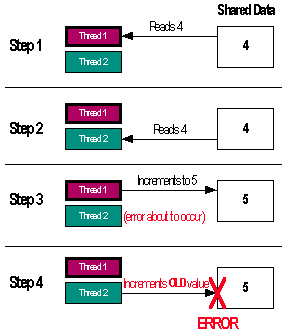

|
| ||
|
| ||
Nancy Winnick Cluts
Developer Technology Engineer
Microsoft Corporation
February 16, 1999
The following article was originally published in Site Builder Magazine (now known as MSDN Online Voices).
As a child, you learn how to complete tasks one at a time. By the time you reach adulthood, and certainly if you reach parenthood, you must learn to do multiple tasks at one time.
For example, how many times have you found yourself juggling a phone call, e-mail, and a person in your office? You may be in the middle of a conversation with a person in your office when your phone rings. The conversation is interrupted for the phone. Perhaps while on the phone, you get new (important) e-mail, and you must interrupt your phone call. Once this e-mail is taken care of, you can go back to the phone or to the person in your office. If you wait too long, the person on the other side of the phone might hang up, or the person in your office might leave in a huff. You must decide how to spend your time and who gets it.
In the above example, you are multitasking. Your decision as to how to spend your time is the same as the computer scheduling multiple tasks (i.e., programs). Just as you have only 24 hours in the day, the computer also has limited resources. It may seem that you are talking on the phone and doing e-mail at the same time -- but in truth, your attention can fully be given only to one thing at a time (except if you're a mom, in which case, you actually can cook dinner, help your child with homework, and talk on the phone simultaneously). In reality, you are switching attentions fast enough to make it seem like you are doing tasks simultaneously. When a computer multitasks, it switches from one program to another so quickly that it makes you thinks all programs are running at the same time.

Figure 1. Single-tasking versus multitasking -- user's view
If you were to have a clone (named Dolly, perhaps), you would be able to perform two tasks simultaneously. For a computer with multiple CPUs, running programs on each CPU at the same time is known as multiprocessing. Sometimes, people use the terms multitasking and multiprocessing interchangeably; however, you cannot truly multiprocess without multiple processors. So, if you are using a machine that has only one CPU, the operating system may be multitasking. If you are using a machine with multiple processors, your operating system can both multitask and multiprocess.
In an operating system, a process is a logical task. Processes are created when an application runs, when a system service is started, and when, in the case of Windows NT, a subsystem is started. Each process has its own dedicated set of resources (such as its own dedicated memory space) that can be accessed directly only by the program that owns the process. This means if you create a program that uses some data, only your program can access that data, unless you set up some form of cross-process communication or take advantage of the operating system's cross-process data-sharing mechanism. Most Windows developers use COM objects to facilitate cross-process communication. If you use Windows NT and want to share data, you can use memory-mapped files. But this is getting far too technical for a Geek Speak column, so let's move on.
There are two basic kinds of multitasking that you can use: cooperative, in which the process that is currently running must give up CPU time slices to other processes; and preemptive, in which the operating system determines which program gets time slices. Microsoft Windows 3.x and the Macintosh both use cooperative multitasking, while OS/2, Windows 95, Windows NT, UNIX, and the Amiga operating system use preemptive multitasking.
With cooperative multitasking, each program must allow the CPU to be used by other programs. Applications for cooperative multitasking systems contain a special code loop that yields control to allow the other applications to execute. This works fairly well when everyone plays by the rules, but when an application fails to yield, it "hogs" the CPU. This means that the end user cannot switch to other applications, and makes the operating system or the application appear "hung."
In preemptive multitasking, the operating system schedules the CPU time, and an application can be paused (preempted) by the operating system at any time. This alleviates the problem of applications that "don't play nicely together," because the operating system is responsible for giving each application its own time slice.
Windows 95 uses preemptive multitasking for 32-bit Windows applications and, for backward compatibility, cooperative multitasking for 16-bit Windows applications (applications written for Windows 3.x).
A thread is a task that can run independently of other parts of the program. A thread belongs to one process and gets its own CPU time slice. Win32-based applications can use multiple threads of execution, which is called multithreading. Windows 3.x did not provide a mechanism for natively supporting multithreaded applications; however, some companies that created applications for Windows 3.x implemented their own threading schemes.
Win32-based applications can create multiple threads within a given process. By creating multiple threads, the application can accomplish some background processing, such as a calculation, to allow the program to run faster. While the thread is running, the user can continue to interact with the program. As mentioned earlier, when an application is run, a process is created for that application. The application can then have a separate thread that waits for keyboard input or performs an operation, such as spooling to the printer or, in the case of a spreadsheet, calculating the sum of a column.
In the Web world, you run into threads when you are trying to tune the server performance of your Web site. If you use Internet Information Server (IIS), you can set the maximum number of threads that are created for each processor on your server. This helps to parcel out the work more evenly among processors and can help speed up your site.
Now that you know what a threads are and where they can be used, let's take a look at what you might run into when using them: an ActiveX component. ActiveX components are COM-based bits of code that run independently of other code. Does this sound familiar? When you use an ActiveX component, it must be registered with the operating system. One of the pieces of information that is registered is whether the ActiveX component supports multiple threads and, if so, how it supports them. This is known as the threading model.
The basic threading models that components support are: single, apartment, free, and both. The next sections will talk about each model and what it means for components.
If a component is marked (i.e., registered) as a single-threaded component, it means that all of the functions (called methods) that execute will run in one shared thread with the component. This is analogous to an application that does not create separate threads of execution. The downside to single-threaded components is that only one method can run at a time. If there are multiple calls to the component, such as calling the save method in a component, bottlenecks can occur, because only one call can be serviced at a time. In the worst-case scenario, the system can slow to a crawl and appear "hung." If you are going to create or use an ActiveX component, single-threaded components are not recommended.
If you have a component that is marked as apartment-threaded, each of the methods that executes will run on a thread that is associated with the component. It is known as apartment threading because each instance of the component that is run (i.e., every time a different process calls into the component) a new instance is created, corresponds to one thread apartment, and each component that runs has its own thread. An apartment-threaded component is better than a single-threaded component because multiple components can execute methods in their own apartments simultaneously.
A free-threaded component is a multithreaded component that supports multithreaded apartments. This means that multiple method calls each have their own thread of execution and can run simultaneously. This can make your component much faster, but there are some downsides. Apartment-threaded components that run within the same apartment can call methods to another component within the same apartment directly. This is a very fast operation. However, free threaded components must make calls from one apartment to another. To do this, Win32 creates a proxy to cross apartment boundaries. This creates overhead for every function call that needs to be made, and slows down the system. All calls made to access free-threaded components will be made via a proxy. Since proxy calls are slower than direct calls, you will notice a performance decrease.
Another note of caution about free-threaded components: They're not really free. If you create a component that is free-threaded, you must still ensure that the threads in the component are synchronized properly. This is not a trivial task. Simply marking your component as free won't make your component multithreaded; you still need to do the work to make the component free threaded.
If you do not do this, your shared data can be corrupted. Here's why: Let's say that you have a method that calculates some data and writes it to some variable. The method is passed in some starting value, say 4. Later on in the calculation, that variable value is incremented to 5. At the end of the method, the final value is put in the variable. This all works fine when one calculation is happening at a time. However, if another thread tries to access this data while it is being changed, the data retrieved may be incorrect. The following diagram illustrates this point.

Figure 2. Shared data being corrupted by multiple thread access
To fix this, developers provide thread synchronization for objects. Thread synchronization is code that is run when you are running some other code you want protected. The operating system will not preempt that code until it gets a signal that it is okay to interrupt. If you want more details about thread synchronization objects, you have no business reading a Geek Speak column! No, I meant, "Take a look at the recommended reading at the end of this article."
If you've gotten this far and have decided that each type of threading has its pros and cons, and you would like a combination of threading models, the both threading model may be the answer. A component that is marked as both has characteristics of apartment-threaded, as well as free-threaded, components. When a component is marked as both, the component will always be created within the same apartment as the object that created it. If the component is created by an object that is marked as single-threaded, then the component will behave like an apartment-threaded component, and it will be created in the thread apartment. This means that calls between the component and the object that created it don't require a proxy call for communication.
If the new component is created by a free-threaded object, the component will act like a free-threaded component, but it will run in the same apartment, so the new component can access the object that created it directly (i.e., without proxy calls). Remember, if you are going to mark your component as both, you do need to provide thread synchronization to protect your thread data.
If you've gotten this far, you (hopefully) understand the basics of processes, tasks, and threads. If you'd like to read more, the following articles may be of help. I will warn you ahead of time that most of these resources are not for the faint of heart: A good understanding of COM, C++, and Win32 will go a long way towards understanding some of them.
Ever since MSDN Online developer-technology writer Nancy Cluts became a godmother recently, she's been making us offers we can't refuse.
Did you find this material useful? Gripes? Compliments? Suggestions for other articles? Write us!
© 1999 Microsoft Corporation. All rights reserved. Terms of use.